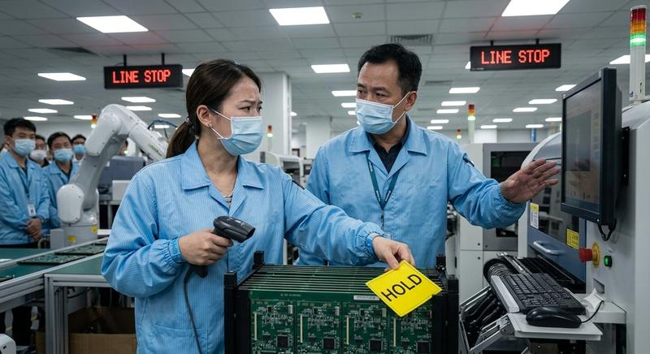
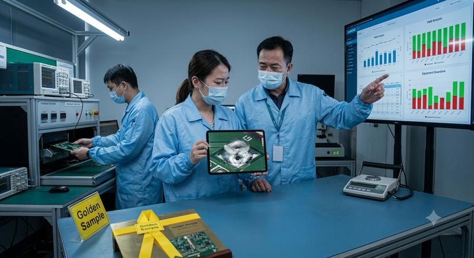
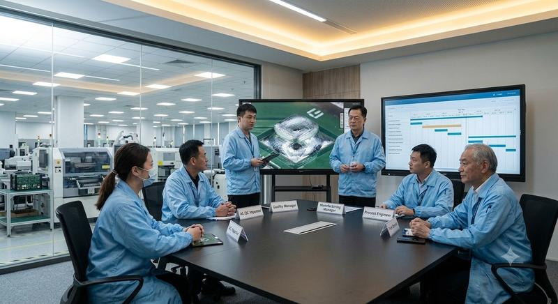
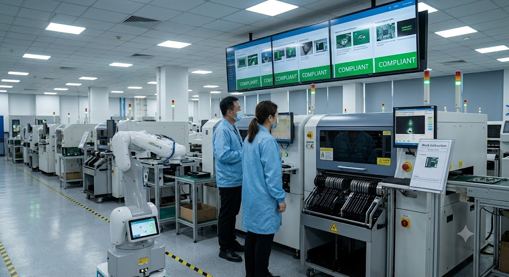

Wistron Production Line Management
整合人（Man）、機（Machine）、料（Material）、法（Method）、環（Environment）五大關鍵要素，為 SMT、組裝與測試產線提供異常根源分析（RCA）與爭議裁決的數據化管理框架。
疑慮產品一律先入 WIP 隔離區，絕不在瑕疵風險下邊跑產線邊討論。
用 Swapping Test（機）、Golden Sample（法）、IoT 履歷（環）、AI/技能矩陣（人）說話。
任何爭議處理完畢後，必須修正 SOP 或 MES 防呆邏輯，將個人經驗轉化為系統強制力。
「人機料法環」（5M1E）是MaTBC等 EMS 大廠進行產線管理、智慧製造導入與異常根源分析（RCA）的核心架構
定義：生產線上所有人員的技能等級、SOP 遵從度、機敏權限與作業效率管理。
MaTBC實務：AI 產線人員 SOP 動作與防錯防呆分析 — 透過影像識別即時監控組裝人員動作，若漏鎖螺絲、順序顛倒或未佩戴靜電手環，系統即時停機警示。
定義：生產設備、夾具、測試治具與搬運載具的穩定度、稼動率（OEE）與預測性維護。
MaTBC實務：SMT 設備 AI 預測性維護（PdM）與 AMR 智慧物流 — 導入 AMR 進行料件自動配送，對迴焊爐進行 IoT 感測器監控，實現停機前的預防性維護。
定義：原物料、零組件、錫膏、PCB、包裝材料的品質管控、來料檢驗（IQC）、MSD 濕敏管控與 BOM 追溯管理。
MaTBC實務：AI 視覺來料檢驗與 MSD 全程追溯 — 透過 AOI + AI 對進料進行外觀瑕疵自動篩檢；對 BGA、QFP 等濕敏元件實施拆封到打件的全程暴露時間追蹤，超時自動鎖定並觸發烘烤流程。
定義：製造流程、參數設定、標準工時（ST）與品質檢驗的規範化與自動化優化。
MaTBC實務：AOI + AI 瑕疵檢測與數位雙生（Digital Twin）流程優化 — 結合 AI 深度學習降低過殺率，透過數位雙生模擬最佳化生產線流向。
定義：生產現場的環境條件監控，包含溫濕度、潔淨度、ESD 與碳排放/能耗管理。
MaTBC實務：無塵室/SMT 車間溫濕度 IoT 監控與 ESG 智慧能源管理 — 佈建微型環境感測器，超標時自動調節空調除濕系統，連動 ESG 能耗管理平台。
事實為本、數據說話、履歷可追溯（Data-Driven & Traceability）
以客戶簽章認可的 SIP、圖紙、IPC-A-610 等文件為最高準則，超出規範即屬不良。
爭議發生時，先執行 WIP 隔離（Quarantine），防止疑慮品流入下一站或出貨。
不講「感覺有瑕疵」，必須拿出 CPK < 1.33、GR&R > 10%、Yield 異常等判定數據。
品管追求「零瑕疵與合規性」，生產追求「產量與稼動率」，兩者目標一致但立場存在天然張力
| 項目 | 品管（QA/QC）管理重點 | 生產大領班管理重點 |
|---|---|---|
| 人 Man | 1. 人員技能檢定與上崗資質（Certification） 2. 是否嚴格遵守 SOP，有無違規操作/越站 3. 首件檢查（FAI）與自檢落實度 | 1. 產線人力出勤率與瓶頸站人力支援部署 2. 新手/熟練工的平衡，產線平衡率 3. 人員作業工時（UPPH）與 SOP 執行速度 |
| 機 Machine | 1. 設備與治具的校正（Calibration）與點檢記錄 2. CPK（製程能力指數）與設備精密度表現 3. 防呆（Poka-Yoke）機制是否正常發揮作用 | 1. 設備稼動率（OEE）、故障停機時間 2. 保養（PM）時間安排，避免佔用排程 3. 換模/換線（SMED）的切換效率 |
| 料 Material | 1. 來料檢驗（IQC）與供應商品質稽核 2. MSD（濕敏元件）拆封暴露時間管控 3. BOM 版本比對與物料追溯（Traceability） | 1. 線上物料周轉率與呆滞料控制 2. 缺料預警與替代料（Alternative）切换效率 3. 物料配送準時率（JIT）與線邊倉管理 |
| 法 Method | 1. WI/SOP 版本控制（ECN/ECO 變更履歷） 2. 測試參數、過爐溫度曲線（Profile）合規性 3. 產品品質規範（AQL / IPC 標準）執行 | 1. 生產順暢度，排程達成率 2. 異常時的應變流向（MRB / 特採審核） 3. 標準工時（ST）與實際工時的差距控制 |
| 環 Environment | 1. 溫濕度、潔淨度、ESD 靜電接地連通性 2. MSD（濕敏元件）拆封暴露時間管控 3. 5S 執行與區域劃分（良品/不良品嚴格隔離） | 1. 作業環境安全性（OSHA）與人員舒適度 2. 生產現場物料擺放區域（WIP）流暢度 3. 環境異常造成停機時的工時報廢處理 |
當品管與大領班無法達成共識時，啟動標準化升級流程
品管領班（QC Supervisor）↔ 生產大領班（Production Leader）
品質經理（QA Manager）+ 製造部經理（MFG Manager）+ 製程工程師（PE）
召開 MRB 審查會議，驗證數據
廠長 / 營運高階主管（Plant General Manager / Operations Director）
若無法立即佐證安全性與品質風險，裁決一律採 「最高安全原則（Safety/Quality First）」：先 Hold Line / Quarantine，待 PE/QA 補齊實體測試數據並簽署特採同意書（Waiver / Deviations）後始得放行。
不能靠口角或憑經驗喊話，必須遵循事實為本、數據說話的舉證架構
| 項目 | 常見爭議 | 品管舉證 | 生產舉證 |
|---|---|---|---|
| 人 | 品管判定作業員漏鎖螺絲；領班認為 SOP 模糊 | 提出 AOI/AI 錄影檔、稽核紀錄；檢查技能矩陣與認證履歷 | 拿出最新 WI/SOP 發布日誌（DCC 簽核紀錄），提出 ECN 申請單 |
| 機 | 貼片機持續拋料，品管要求停機；領班認為是料捲問題 | 調閱 MES 拋料率數據（>0.05%）；提出治具/鋼板張力測試值 | 執行 Swapping Test — 將疑慮料捲更換至正常 Feeder 驗證 |
| 料 | 來料不良率偏高，品管要求退貨；領班認為不影響功能 | 提出 IQC 檢驗報告、供應商出貨檢驗數據（OQC）、8D 報告 | 進行 Assembly-Level 實裝測試，證明功能不受影響；提出特採申請 |
| 法 | 產品測試 FAIL，品管認定不良；領班認為是過殺 | 檢視 Golden Sample 測試結果（PASS 則產品確實不良） | 執行 Gage R&R — 同一合格板連續測試 10 次，數據波動大則治具不穩定 |
| 環 | 溫濕度超標 1%，品管要求停產；領班認為影響不大 | 拿出 IoT 溫濕度追蹤履歷圖與 MSD 管控表，對照規範指出風險 | 調閱空調運轉日誌證明暫態超標；要求進行信賴性切片實驗 |
從異常爆發到標準化優化的完整循環機制

品管稽核發現操作不合規（人）或環境異動（環），第一時間發起 Hold Line 與產品隔離（Quarantine），防止不良品流入下一站。

爭議核心在於「設備誤判」還是「工藝參數錯誤」。雙方不能僅憑經驗，必須依賴 CPK、GR&R、Swapping Test、Golden Sample 等數據佐證。

現場無法達成共識時，異常升級至管理層。召開 MRB（物料評論會），加入 PE/IE 工程師，最終由廠長或營運總監進行裁決。

裁決完成後，重點轉向預防再發。修訂 WI/SOP、人員再教育、優化設備防呆機制，將經驗轉化為 組織資產，實現循環優化。
MaTBC等 SMT 及組裝產線中最具代表性的爭議案例與標準處置流程
SMT 產線 0201 小尺寸電容拋料率高達 0.15%（標準 <0.03%）。品管要求停機保養吸嘴；大領班認為是料捲包裝瑕疵，主張更換料捲即可。
• 禁止盲目停機，應先以 Swapping Test 切斷模糊空間
• 備件應採「整組換備品（Quick Swap）」模式，降低 OEE 損失
伺服器後段組裝線，AI 影像防呆系統偵測到作業員少鎖一顆散熱器螺絲。領班主張「非結構核心，可出貨前再補鎖」，品管堅決反對。
• 嚴禁「後補作業」，散熱器未按對角線順序鎖緊易造成晶片開裂
• 新人比率控管：單一產線新手不得超過 15%，且必須配置專人帶教
主機板 ICT 不良率由 0.5% 飆升至 8%，皆為「R123 電阻開路」。大領班認為是測試治具探針污染（過殺）；品管認為是上游 SMT 空焊。
• Golden Sample 必須隨時備有有效校正期，是快速區分「產品不良」與「治具過殺」的關鍵工具
• 探針清潔後若重測仍 FAIL，须立即送 X-Ray 或切片，切勿重複重測
暴雨天車間空調除濕故障，濕度飆升至 75% RH（規範最高 60% RH），多批 Level 3 MSD 元件已拆封在線。品管要求停產烘烤；領班認為僅超標 1 小時不影響。
• 濕敏效應（Popcorn Effect）：IC 吸濕後過 Reflow 會因水氣膨脹導致內部爆裂
• IoT 自動連動防呆：濕度超標超過 15 分鐘，自動鎖定 MSD 料號打件權限
工程部已發布 ECN 升級 BIOS 韌體至 v2.0，但燒錄站仍繼續燒錄 v1.0。品管稽核發現後 Hold 住 300 台產品；領班抗議工程部未及時通知。
• 防呆軟體化：燒錄站應導入雲端 FW 自動比對，版本不符直接鎖定無法開工
• ECN 閉環管理：變更發布後必須包含「舊料清退」與「舊版刪除」的實體確認步驟